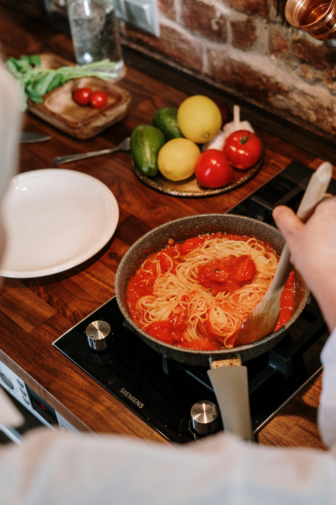

Recept: Pasta Ragù
Pasta ragù är en klassisk italiensk rätt som kombinerar kött, tomat och örter i en läcker sås som serveras med pasta.
Här är hur du gör denna underbara rätt:
Ingredienser:
- 400g nötfärs
- 1 gul lök, hackad
- 2 vitlöksklyftor, hackade
- 400g krossade tomater
- 1 dl rödvin
- 3 msk olivolja
- Salt och peppar
- Parmesanost, riven
Instruktioner:
- Hetta upp olivolja i en stor panna och fräs lök och vitlök tills de är mjuka.
- Tillsätt nötfärsen och bryn den jämnt.
- Häll i rödvinet och låt det reducera något.
- Tillsätt de krossade tomaterna och låt såsen sjuda i cirka 20 minuter.
- Krydda med salt och peppar efter smak.
- Servera såsen med nykokt pasta och toppa med riven parmesan.
